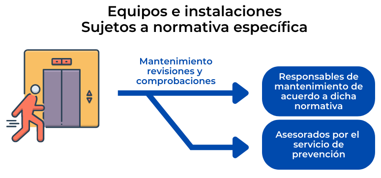

Instalaciones y equipos sujetos a normativa específica
En cualquier empresa existen instalaciones y equipos (de servicio o protección) inherentes al centro o lugar de trabajo. Cabe citar, entre otras, las Instalaciones de elevación (ascensores), eléctricas (de baja o alta tensión), térmicas, de gas, frigoríficas, de almacenamiento (de líquidos “peligrosos”, de botellas de gases o de GLP en depósitos), de protección contra incendios, etc. Para la mayoría de estas instalaciones, así como para ciertas instalaciones o equipos de trabajo (determinados tipos de grúas, por ejemplo) existe una normativa específica de seguridad que trata del mantenimiento, las revisiones o comprobaciones y las inspecciones que deben realizarse, según los casos.
La dirección de la empresa debe asegurar que los responsables del mantenimiento de equipos e instalaciones sujetos a una normativa específica de seguridad sean revisados y mantenidos de acuerdo a dicha normativa. Es decir, definiendo, quién debe efectuar la revisión, qué hay que revisar, con qué frecuencia, etc. El servicio de prevención puede prestar asesoramiento para determinar qué revisiones o inspecciones son obligatorias y cómo deben gestionarse, pero atribuirle la responsabilidad exclusiva de las mismas, al menos, si se trata de un servicio de prevención ajeno, es una política (de no integración) tanto menos eficaz cuanto más numerosas o dispersas sean las instalaciones o equipos a controlar. Sin embargo, aunque la responsabilidad de velar para que las unidades designadas gestionen correctamente las revisiones reglamentadas es de la Dirección, nada impide que ésta puede delegar en el Servicio de prevención (en particular, si es “propio”) el seguimiento de las mismas.
